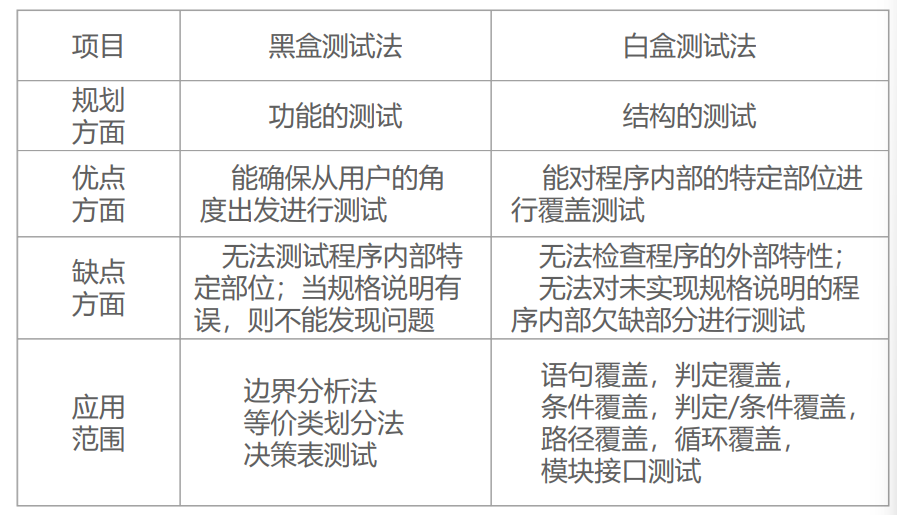
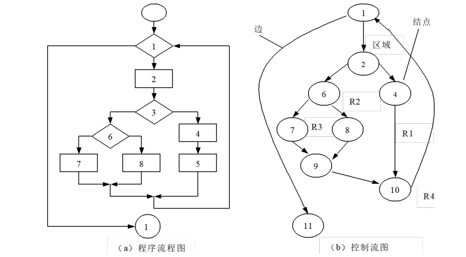

软件测试基础
IEEE将软件可靠性定义为：系统在特定环境下，在给定的时间内无故障运行的概率。
影响软件可靠性的因素：需求错误，设计错误，编码错误，测试错误，文档错误。
软件缺陷的特征：
- 缺陷不易看到。
- 发现了缺陷，但不易找到问题发生的原因所在。
定义
软件测试的定义：
- 软件测试是为了发现错误而执行程序的过程。
- 软件测试是根据软件开发各阶段的规格说明和程序的内部结构而精心设计的一批测试用例，并利用这些测试用例运行程序以及发现错误的过程，即执行测试步骤。
测试：一项活动，在这项活动中某个系统或组成的部分将在特定的条件下运行，结果将被观察和记录，并对系统或组成部分进行评价。测试活动有两种结果：找出缺陷和故障，或显示软件执行正确。
测试用例：所谓测试用例是为特定的目的而设计的一组测试输入、执行条件和预期的结果；测试用例是执行测试的最小实体。
测试步骤：测试步骤详细规定了如何设置、执行、评估特定的测试用例。
测试是一个或多个测试用例的集合。测试无法说明错误不存在，只能说明软件错误已出现。一个好的测试用例在于发现了还未曾发现的错误；一次成功的测试则是发现了错误的测试。
设计测试用例的基本准则：代表性、可判定性、可再现性
测试用例特征：
- 最有可能抓住错误的；
- 不是重复的、多余的；
- 一组相似测试用例中最有效的；
- 既不是太简单，也不是太复杂。
软件测试不等于程序测试。软件测试贯串于软件定义和开发的整个过程。
软件测试的目标：发现错误，检查系统是否满足需求。
软件测试的对象：软件开发过程中所产生的需求规格说明、概要设计规格说明、详细设计规格说明以及源程序。
软件测试涉及的关键问题包括四个方面：测试由谁来执行、测试什么、什么时候进行测试、怎样进行测试。
软件测试八原则：
- 尽早地和及时地测试
- 测试用例应当由测试数据和与之对应的预期结果组成；
- 在程序提交测试后，应当由专门的测试人员进行测试；
- 测试用例应包括合理的输入条件和不合理的输入条件；
- 严格执行测试计划，排除测试的随意性；
- 充分注意测试当中的群体现象；
- 应对每一个测试结果做全面的检查；
- 保存测试计划、测试用例、出错统计和最终分析报告，为维护工作提供充分的资料。
分类
周期性
测试→改错→再测试→再改错
代价
随着整个开发过程的时间推移，更正缺陷或修复问题的费用呈几何级数增长。
软件开发过程
软件产品的组成
客户需求、产品说明、设计文档、测试文档、进度计划、上一版本信息反馈、商业竞争对手的同类软件产品情况、易用性数据、观察与感受说明书。
设计文档：
- 构架：即产生描述软件整体设计的文档，包括软件所有主要部分的描述以及相互间的交互方式。
- 数据流示意图：表示数据在程序中如何流动的正规示意图。通常由圆圈和线条组成，所以也称为泡泡图。
- 状态变化示意图：将软件分解为基本状态或者条件的另一种正规示意图，表示不同状态之间的变化的方式。
- 流程图：用图形描述程序逻辑的最常用方式之一。根据详细的流程图编写程序代码简单方便。
- 注释代码：代码注释是便于维护代码的程序员掌握代码的内容和执行方式。
测试文档：
- 测试计划：描述用于验证软件是否符合产品说明书和客户需求的整体方案。
- 测试用例：依据测试的项目，并描述验证软件的详细步骤。
- 软件测试报告：描述依据测试用例找出的问题，通常提交测试报告。
- 归纳、统计和总结：采用图表、表格和报告等形式来描述整个测试过程。
软件开发模式
-
大棒开发法
-
边写边改法
-
瀑布法
瀑布模式是将软件生命周期的各项活动，规定为按照固定顺序相连的若干个阶段性工作，形如瀑布流水，最终得到软件产品。
优点：易于理解；调研开发的阶段性；强调早期计划及需求调查；确定何时能够交付产品及何时进行评审与测试。
缺点：需求调查分析只进行一次，不能适应需求变化；顺序的开发流程，使得开发中的经验教训不能反馈到该项目的开发中去；不能反映出软件开发过程的反复与迭代性；没有包含任何类型的风险评估；开发中出现的问题直到开发后期才能够显露，因此失去及早纠正的机会。
-
快速原型法
根据客户需求在较短的时间内解决用户最迫切解决的问题，完成可演示的产品。这个产品只实现最重要功能，在得到用户的更加明确的需求之后，原型将丢弃。
-
螺旋模式法
螺旋模式是瀑布模式与边写边改演化模式相结合，并加入风险评估所建立的软件开发模式。
主要思想是在开始时不必详细定义所有细节，而是从小开始，定义重要功能，尽量实现，接受客户反馈，进入下一阶段，并重复上述过程，直到获得最终产品。
优点：严格的全过程风险管理；强调各开发阶段的质量；提供机会评估项目是否有价值继续下去。
-
敏捷开发
轻量和简单。
敏捷方法论包含最少的流程和文档，减少正式性。目的是做眼前能做的事情，而不去预测太远的未来，首先完成紧迫的事情。
开发方法要称之为敏捷，需要具备4个基本特征：增量的、协作的、直接的、适应性强的。
开发与测试的关系
测试与开发各阶段的关系
测试与开发的并行性
完整的软件开发流程
软件测试模型
-
V模型
-
X模型
-
H模型
-
W模型
软件测试过程
制定测试计划
- 制定计划
- 测试大纲
- 软件测试报告
测试执行过程
- 初测期：测试主要功能和关键的执行路径，排除主要障碍。
- 细测期：依据测试计划和测试大纲、测试用例，逐一测试大大小小的功能、方方面面的特性、性能、用户界面、兼容性、可用性等等；
- 回归测试期：系统已达到稳定，在一轮测试中发现的错误已十分有限；复查已知错误的纠正情况，确认未引发任何新的错误时，终结回归测试。
软件测试策略与过程
软件测试的复杂性分析
- 无法对程序进行完全测试
- 测试无法显示潜在的软件缺陷和故障
- 存在的故障现象与发现的故障数量成正比
- 不能修复所有的软件故障
- 软件测试的代价
软件测试方法与策略
软件测试策略：是为软件工程过程定义的一个软件测试的模板，也就是把特定的测试用例方法放置进去的一系列步骤。
软件测试充分性五原则：
- 单调性
- 非复合性
- 非分解性
- 复杂性
- 回报递减率
静态测试
静态测试不实际运行软件，主要是对软件的编程格式、结构等方面进行评估。
静态测试包括代码检查、静态结构分析、代码质量度量等。它可以由人工进行，也可以借助软件工具自动进行。
静态方法常常称为“分析”，静态测试是对被测程序进行特性分析方法的总称。
静态测试可以完成以下工作：
-
发现下列程序的错误
错用局部变量和全局变量；未定义的变量、不匹配的参数；不适当的循环嵌套或分支嵌套、死循环、不允许的递归；调用不存 在的子程序，遗漏标号或代码。
-
找出以下问题的根源
从未使用过的变量；不会执行到的代码、从未使用过的标号；潜在的死循环。
-
提供程序缺陷的间接信息
所用变量和常量的交叉应用表；是否违背编码规则；标识符的使用方法和过程的调用层次。
-
为进一步查找做好准备
-
选择测试用例
-
进行符号测试
代码检查
代码检查包括代码走查、桌面检查、代码审查等，主要检查代码和设计的一致性，代码对标准的遵循、可读性，代码的逻辑表达的正确性，代码结构的合理性等方面。
静态结构分析
静态结构分析主要是以图形的方式表现程序的内部结构。
代码质量度量
软件质量包括六个方面：功能性、可靠性、易用性、效率、可维护性、可移植性
针对软件的可维护性，目前主要存在三种度量参数：
- Line复杂度：以代码的行数作为计算的基准。
- Halstead复杂度：以程序中使用到的运算符与运算元数量作为计数目标，然后可以据以计算出程序容量、工作量等。
- McCabe复杂度：一般称为圈复杂度，它将软件的流程图转化为有向图，然后以图论来衡量软件的质量。

动态测试
主要特征：计算机必须真正运行被测试的程序，通过输入测试用例，对其运行情况即输入与输出的对应关系进行分析，以达到检测的目的。
动态测试包括：功能确认与接口测试、覆盖率分析、性能分析、内存分析
黑盒测试
黑盒测试又称为功能测试、数据驱动测试和基于规格说明的测试。它是一种从用户观点出发的测试，一般被用来确认软件功能的正确性和可操作性。
黑盒测试是在程序接口进行测试，它只是检查程序功能是否按照规格说明书的规定正常使用，也被称为用户测试。
特点：
- 与软件的具体实现过程无关，在软件实现的过程发生变化时，测试用例仍然可以使用。
- 用例的设计可以和软件实现同时进行，这样能够压缩总的开发时间。
黑盒测试的具体技术方法：
- 边界值分析法
- 等价类划分法
- 因果图法
- 决策表法
白盒测试
白盒测试又称为结构测试、逻辑驱动测试或基于程序的测试，一般用来分析程序的内部结构。
白盒测试需要完全了解程序结构和处理过程，它按照程序内部逻辑测试程序，检验程序中每条通路是否按预定要求正确工作，也被称为程序员测试。
单元测试
单元测试的辅助模块：
-
驱动模块(Drive)
用来模拟被测试模块的上一级模块，相当于被测模块的主程序。它接收数据，将相关数据传送给被测模块，启动被测模块，并打印出相应的结果。
-
桩模块(Stub)
用来模拟被测模块工作过程中所调用的模块。它们一般只进行很少的数据处理。
被测模块、驱动模块和桩模块共同构成了一个如下图所示的单元测试的测试环境
集成测试
集成测试的整个过程由4个步骤完成：
- 主控模块作为测试驱动器。
- 根据集成的方式（深度或广度），下层的桩模块一次一次地被替换为真正的模块。
- 在每个模块被集成时，都必须进行单元测试。
- 重复第2步，直到整个系统被测试完成。
-
非增量式测试
采用一步到位的方法来构造测试，对所有模块进行个别的单元测试后，按照程序结构图将各模块连接起来，把连接后的程序当作一个整体进行测试。
缺点：当一次集成的模块较多时，非增量式测试容易出现混乱，因为测试时可能发现了许多故障，在修正一个故障的同时，可能又引入了新的故障，很难判定出错的具体原因和位置。
-
增量式测试
增量式测试的集成是逐步实现的。逐次将未曾集成测试的模块和已经集成测试的模块结合成程序包，再将这些模块集成为较大系统，在集成的过程中边连接边测试，以发现连接过程中产生的问题。
按照不同的实施次序可以分为三种不同的方法：
-
自顶向下增量式测试
模块集成的顺序是首先集成主程序，然后依照控制层次结构向下进行集成。从属于主程序的按深度优先方式或者广度优先方式集成到结构中去。
深度优先方式的集成：首先集成在结构中的一个主控路径下的所有模块，主控路径的选择是任意的。
广度优先方式的集成：首先沿着水平方向，把每一层中所有直接隶属于上一层的模块集成起来，直到底层。
优点：可以自然的做到逐步求精，一开始就能让测试者看到系统的框架。
缺点：需要提供桩模块。
-
自底向上增量式测试
程序模块结构的最底层模块开始集成和测试。
优点：生成测试数据简单。
缺点：直到最后一个模块被加进去之后才能看到整个程序的框架。
-
混合增量式测试
把自顶向下测试和自底向上测试这两种方式结合起来进行集成和测试。这样可以兼具两者的优点，而摒弃其缺点。
-
-
回归测试
用来保证（由于测试或其他原因的）改动不会带来不可预料的行为或另外的错误。
增量式测试要比非增量式测试具有一定的优越性。
确认测试
确认测试也称为合格性测试，是检验所开发的软件是否能按用户提出的要求进行。软件确认要通过一系列证明软件功能和要求一致的黑盒测试来完成。
系统测试
由于软件只是计算机系统中的一个组成部分，软件开发完成之后，最终还要和系统中的硬件系统、某些支持软件、数据信息等其他部分配套运行。因此，在投入运行前要完成系统测试，以保证各组成部分不仅能单独的得到检验，而且在系统各部分协调工作的环境下也能正常工作。
恢复测试
恢复测试是通过各种手段，强制性地使软件出错，使其不能正常工作，进而检验系统的恢复能力。
安全测试
安全测试的目的在于验证安装在系统内的保护机制能否在实际中保护系统且不受非法入侵，不受各种非法干扰。
强度测试
强度测试（压力测试）的目的是要检测非正常的情形，测试是想要破坏程序。
性能测试
性能测试用来测试软件在系统集成中的运行性能，特别是针对实时系统和嵌入式系统，仅提供符合功能需求但不符合性能需求的软件是不能被接受的。
正确性测试
正确性测试检查软件的功能是否符合规格说明。
可靠性测试
可靠性测试是从验证的角度出发 ，检验系统的可靠性是否达到预期的目标，同时给出当前系统可能的可靠性增长情况。
兼容性测试
软件兼容性测试是检测各软件之间能否正确地交互和共享信息，其目标是保证软件按照用户期望的方式进行交互，使用其它软件检查软件操作的过程。
黑盒测试
黑盒测试被称为功能测试或数据驱动测试。在测试时，把被测程序视为一个不能打开的黑盒子，在完全不考虑程序内部结构和内部特性的情况下进行。
黑盒测试的目的主要是在已知软件产品所应具有的功能的基础上，进行：
- 检查程序功能能否按需求规格说明书的规定正常使用，测试各个功能是否有遗漏，检测性能等特性要求是否满足。
- 检测人机交互是否错误，检测数据结构或外部数据库访问是否错误，程序是否能适当地接收输入数据而产生正确的输出结果，并保持外部信息（如数据库或文件）的完整性。
- 检测程序初始化和终止方面的错误。
等价类划分法
等价类划分法是一种重要的、常用的黑盒测试方法，它将不能穷举的测试过程进行合理分类，从而保证设计出来的测试用例具有完整性和代表性。
等价类划分法是把所有可能的输入数据，即程序的输入域划分为若干部分（子集），然后从每一个子集中选取少数具有代表性的数据作为测试用例。
等价类是指某个输入域的子集合。在该子集合中，各个输入数据对于揭露程序中的错误都是等效的，它们具有等价特性，即每一类的代表性数据在测试中的作用都等价于这一类中的其它数据。
采用等价类划分法设计测试用例通常分两步进行：
- 确定等价类，列出等价类表。
- 确定测试用例。
划分等价类可分为两种情况：
- 有效等价类：指对软件规格说明而言，是有意义的、合理的输入数据所组成的集合。
- 无效等价类：指对软件规格说明而言，是无意义的、不合理的输入数据所构成的集合。
等价类划分的依据：
- 按照区间划分
- 按照数值划分
- 按照数值集合划分
- 按照限制条件或规则划分
- 细分等价类
在设计测试用例时，应同时考虑有效等价类和无效等价类测试用例的设计。
针对是否对无效数据进行测试，可以将等价类测试分为
- 标准等价类测试：不考虑无效数据值，测试用例使用每个等价类中的一个值。
- 健壮等价类测试：主要的出发点是考虑了无效等价类。对有效输入，测试用例从每个有效等价类中取一个值；对无效输入，一个测试用例有一个无效值，其他值均取有效值。
边界值分析法
边界值分析法是对输入或输出的边界值进行测试的一种黑盒测试方法。
通常边界值分析法是作为对等价类划分法的补充，这种情况下，其测试用例来自于等价类的边界。
边界值分析法设计测试用例步骤：
- 首先确定边界情况。
- 选取正好等于、刚刚大于或刚刚小于边界的值作为测试数据。
在测试用例设计过程中，某些边界值条件是不需要呈现给用户的，或者说用户是很难注意到的，但同时确实属于检验范畴内的边界条件，称为内部边界值条件或子边界值条件。
在实际的测试用例设计中，需要将基本的软件设计要求和程序定义的要求结合起来，即结合基本边界值条件和内部边界值条件来设计有效的测试用例。
采用边界值分析测试的基本思想是：故障往往出现在输入变量的边界值附近。
边界值分析法是基于可靠性理论中称为“单故障”的假设，即有两个或两个以上故障同时出现而导致软件失效的情况很少，也就是说，软件失效基本上是由单故障引起的。
有二元函数f(x,y)，其中x∈[1,12]，y∈[1,31]。
则采用边界值分析法设计的测试用例是：{ <1,15>, <2,15>, <11,15>, <12,15>, <6,15>, <6,1>, <6,2>, <6,30>, <6,31> }
对于一个含有n个变量的程序，采用边界值分析法测试程序会产生4n+1个测试用例。
健壮性测试是作为边界值分析的一个简单的扩充，它除了对变量的5个边界值分析取值外，还需要增加一个略大于最大值以及略小于最小值的取值，检查超过极限值时系统的情况。因此，对于有n个变量的函数采用健壮性测试需要6n+1个测试用例。
因果图法
等价类划分法和边界值分析方法都是着重考虑输入条件，但没有考虑输入条件的各种组合、输入条件之间的相互制约关系。这样虽然各种输入条件可能出错的情况已经测试到了，但多个输入条件组合起来可能出错的情况却被忽视了。
因此必须采用一种适合于描述多种条件的组合、相应产生多个动作的形式来进行测试用例的设计，这就需要利用因果图（逻辑模型）。
因果图法：一种利用图解法分析输入的各种组合情况，从而设计测试用例的方法。
因果图法设计测试用例的步骤：
- 画出因果图
- 因果图转换为判定表
- 为判定表中每一列的情况设计一个测试用例。
因果图法的优点：
- 考虑到了输入情况的各种组合以及各个输入情况之间的相互制约关系。
- 能够帮助测试人员按照一定的步骤，高效率的开发测试用例。
- 因果图法是将自然语言规格说明转化成形式语言规格说明的一种严格的方法，避免不完整性和二义性。
图中的左结点ci表示输入状态（或称原因），右结点ei表示输出状态（或称结果）。
ci与ei取值0或1，0表示某状态不出现，1则表示某状态出现。
因果图中的约束：在实际问题中输入状态相互之间、输出状态相互之间可能存在某些依赖关系，称为“约束”。
对于输入条件的约束有E、I、O、R四种约束，对于输出条件的约束只有M约束。
- E约束(异)：a和b中最多有一个可能为1，即a和b不能同时为1。
- I约束(或)：a、b、c中至少有一个必须为1，即a、b、c不能同时为0。
- O约束(唯一)：a和b必须有一个且仅有一个为1。
- R约束(要求)：a是1时，b必须是1，即a为1时，b不能为0。
- M约束(强制)：若结果a为1，则结果b强制为0。
因果图生成测试用例的基本步骤如下：
- 分析软件规格说明中哪些是原因（即输入条件或输入条件的等价类），哪些是结果（即输出条件），并给每个原因和结果赋予一个标识符。
- 分析软件规格说明中的语义，找出原因与结果之间、原因与原因之间对应的关系，根据这些关系画出因果图。
- 在因果图上用一些记号表明约束或限制条件。
- 把因果图转换为决策表。
- 根据决策表中的每一列设计测试用例。
决策表法
条件桩：列出了问题的所有条件。
动作桩：列出了问题规定可能采取的操作。
条件项：列出针对它所列条件的取值，在所有可能情况下的真假值。
动作项：列出在条件项的各种取值情况下应该采取的动作。
规则：由动作项和条件项组成。
决策表的建立步骤：
- 列出所有的条件桩和动作桩；
- 填入条件项；
- 填入动作项，制定初始判定表；
- 简化；合并相似规则或者相同动作。
决策表测试仅适合对输入域展开分析，不适合对输出域展开测试。
错误推测法
错误推测法凭借的是测试人员的直觉和经验来推测系统中可能出现的各种缺陷。
常常是列举出系统中所有可能的缺陷和容易发生缺陷的特殊情况，以此来设计测试用例。
优点：充分发挥个人的经验和潜能，命中率高。
缺点：覆盖率难以保证；过多的依赖于个人的经验。
白盒测试
白盒测试也称结构测试或逻辑驱动测试，是针对被测单元内部是如何进行工作的测试。
根据程序的控制结构设计测试用例，主要用于软件或程序验证。
白盒测试法检查程序内部逻辑结构，对所有逻辑路径进行测试，是一种穷举路径的测试方法。
即使每条路径都测试过了，仍然可能存在错误。因为：
- 穷举路径测试无法检查出程序本身是否违反了设计规范，即程序是否是一个错误的程序。
- 穷举路径测试不可能查出程序因遗漏路径而出错。
- 穷举路径测试发现不了一些与数据相关的错误。
白盒测试方法原则：
- 保证一个模块中的所有独立路径至少被测试一次。
- 所有逻辑值均需测试真和假两种情况。
- 检查程序的内部数据结构，保证其结构的有效性。
- 在上下边界及可操作范围内运行所有循环。
白盒测试常用测试用例设计方法有：逻辑覆盖法（逻辑驱动测试）、基本路径测试方法
基本概念
控制流图
控制流图（简称流图）是对程序流程图进行简化后得到的，它可以更加突出的表示程序控制流的结构。
控制流图中包括两种图形符号：
-
节点
由带标号的圆圈表示，可代表一个或多个语句、一个处理框序列和一个条件判定框。
表示一个或多个无分支的语句或源程序语句。
-
控制流线
由带箭头的弧或线表示，可称为边。它代表程序中的控制流。

环形复杂度
环形复杂度也称为圈复杂度，它是一种为程序逻辑复杂度提供定量尺度的软件度量。
给定控制流图G的环形复杂度V(G)，计算方法有：
-
E是控制流图中边的数量，N是控制流图中的节点数量
-
P是控制流图G中判定节点的数量
覆盖测试
测试覆盖率
用于确定测试所执行到的覆盖项的百分比。其中的覆盖项是指作为测试基础的一个入口或属性，比如语句、分支、条件等。
测试覆盖率包括
- 功能点覆盖率：用于表示软件已经实现的功能与软件需要实现的功能之间的比例关系。
- 结构覆盖率：包括语句覆盖率、分支覆盖率、循环覆盖率、路径覆盖率等。
逻辑覆盖法
根据覆盖目标的不同，逻辑覆盖可分为：
- 语句覆盖：使程序中的每个可执行语句至少执行一次。
- 判定覆盖：使程序中的每个判定至少都获得一次“真”值和“假”值。
- 条件覆盖：使程序中每个判定包含的每个条件的可能取值（真/假）都至少满足一次。
- 判定/条件覆盖：使程序中每个判定包含的每个条件的所有情况（真/假）至少出现一次，并且每个判定本身的判定结果（真/假）也至少出现一次。
- 组合覆盖：使程序中每个判定的所有可能的条件取值组合都至少出现一次。
- 路径覆盖：覆盖程序中所有可能的路径。
路径测试
路径测试就是从一个程序的入口开始，执行所经历的各个语句的完整过程。
独立路径是指从程序的入口到出口的多次执行中，每次至少有一个语句是新的，未被重复的，也即每次至少要经历一条从未走过的弧。
为 了满足路径覆盖，必须首先确定具体的路径以及路径的个数。通常采用控制流图的边序列和节点序列表示某一条具体路径。
表示方法：
- ab，表明路径是先经历弧a，接着再经历弧b，弧a和弧b是先后相接的。
- a+b，表明两条弧是“或”的关系，是并行的路段。
路径数的计算：将所有弧均以数值1来代替，再进行表达式的相乘和相加运算，最后得到的数值即为该程序的路径数。
基本路径测试方法
在不能做到所有路径覆盖的前提下，如果某一程序的每一个独立路径都被测试过，那么可以认为程序中的每个语句都已经检验过了，即达到了语句覆盖。
基本路径测试方法步骤：
- 画出程序的控制流图
- 计算程序的环形复杂度
- 导出独立路径
- 设计测试用例